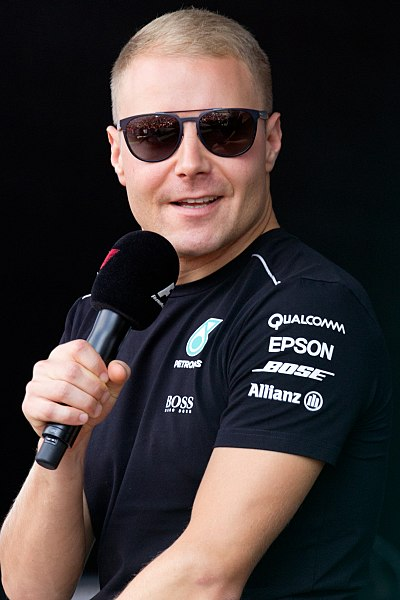
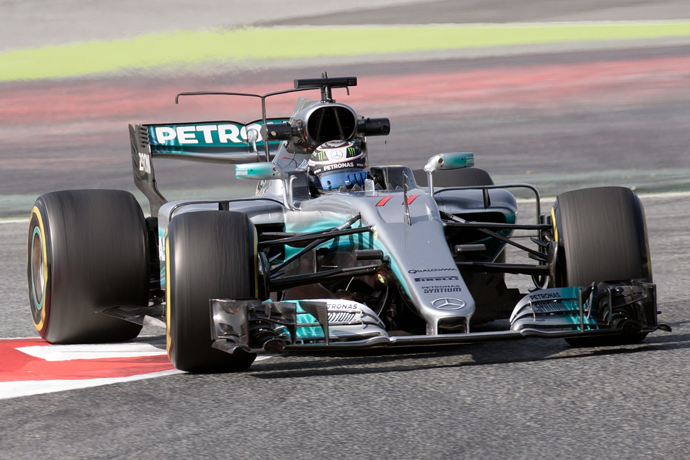

Valtteri Bottas


Valtteri Viktor Bottas, is a Finnish racing driver currently competing in Formula One with Mercedes. Bottas previously drove for Williams from 2013 to 2016. He currently resides in Monaco. In his first four races for Mercedes in 2017, Bottas achieved his first Formula One pole position in Bahrain and his first victory at the following event in Russia. He finished the 2017 season taking pole position, fastest lap, and the race win at Abu Dhabi.